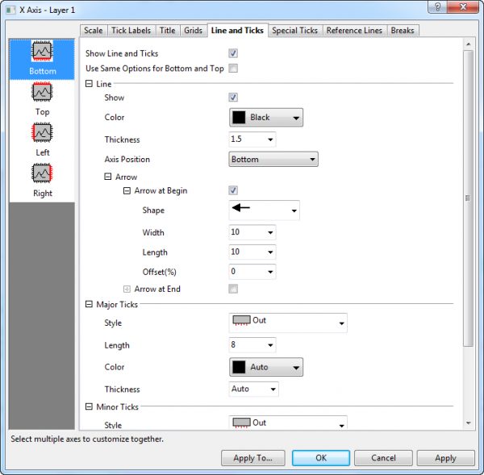

Seit Origin 2017 können Sie die Layerliste verwenden, um zwischen Layern in einem Diagramm mit mehreren Layern zu wechseln.

Diese Registerkarte verfügt über Bedienelemente für Achsenlinien und Hilfsstriche, einschließlich Stil, Position etc. von Linie und Hilfsstrichen. In 2D-Diagrammen können Sie die untere/obere (linke/rechte) Richtung getrennt voneinander benutzerdefiniert anpassen; in 3D-Diagrammen können Sie zwei Achsen für die Richtungen X, Y und Z zeigen, d. h., es gibt sechs benutzerdefiniert anzupassende Richtungen (Vorn/Hinten, Rechts/Links und Unten/Oben).
|  |
| Achsenlinien und -hilfsstriche für die meisten 2D/3D-Diagramme |
|
Seit Origin 2017 können Sie die Layerliste verwenden, um zwischen Layern in einem Diagramm mit mehreren Layern zu wechseln.
|
Aktivieren Sie dieses Kontrollkästchen, um die Linie und Hilfsstriche auf der ausgewählten Achse anzuzeigen. Um Linien und Hilfsstriche zu verbergen, deaktivieren Sie dieses Kontrollkästchen.
Aktivieren Sie dieses Kontrollkästchen, um die gleichen Titeloptionen für die obere und untere (linke und rechte) Achse zu verwenden. Wenn das Kontrollkästchen aktiviert ist, werden die Optionen Unten und Oben (Links und Rechts) geteilt. Eine benutzerdefinierte Anpassung ist nur notwendig für die untere und
Aktivieren Sie dieses Kontrollkästchen, um die Linie auf der ausgewählten Achse anzuzeigen.
Wählen Sie eine Linien- und Hilfsstrichsfarbe aus dieser Auswahlliste. Auto bedeutet, dass die Füllfarbe der Zeichnung verwendet wird, aber eine dunklere Version. Wenn die Füllfarbe der Zeichnung auf "Keine" oder "Auto" gesetzt ist, verwendet Origin eine dunklere Version der Rahmenfarbe. Wenn es keine Füllfarbe gibt (z. B. in Liniendiagrammen), wird der Linienfarbe gefolgt.
Geben Sie eine gewünschte Linienstärke (in Punkten, wobei ein Punkt=1/72 Inch) für die Achse und die Hilfsstriche in dieses Kombinationsfeld ein oder wählen eine aus. |-
| Unten (X), Oben (X), Links (Y) oder Rechts (Y) | Die Achse wird zurück an ihre Standardposition geschoben. |
|---|---|
| % von unten (oben, links, rechts usw.) | Die Achse wird aus Ihrer Standardposition verschoben. Geben Sie im Textfeld Prozent/Wert einen “Prozent der Achsenlänge”-Wert ein. Für Achsen in 2D-Diagrammlayern geben Sie einen positiven Wert ein, um die Achse aus der Mitte der Seite weg zu verschieben; geben Sie einen negativen Wert ein, um die Achse zur Mitte der Seite hin zu verschieben. |
| An Position = | Positionieren Sie die Achse bei einem bestimmten Wert der X- oder Y-Achse. Geben Sie den X- oder Y-Wert im Textfeld Prozent/Wert ein. |
| Unten (X), Links (Y) oder Vorn (Z) | Die Achse wird zurück an ihre Standardposition geschoben. |
|---|---|
| % von Unten (Links, Vorn) | Die Achse wird aus Ihrer Standardposition verschoben. Geben Sie im Textfeld Prozent/Wert einen “Prozent der Achsenlänge”-Wert ein. Für Achsen in 2D-Diagrammlayern geben Sie einen positiven Wert ein, um die Achse von dem Koordinatenursprung weg zu verschieben; geben Sie einen negativen Wert ein, um die Achse in Richtung des Koordinatenursprungs zu verschieben. |
| An Position = | Positionieren Sie die Achse bei einem bestimmten Wert der X- , Y- oder Z-Achse. Geben Sie den X-, Y- oder Z-Wert im Textfeld Prozent/Wert ein. |
Legen Sie fest, ob der Pfeil für die aktuelle Achse, sowohl in 2D- als auch in 3D-Diagrammen, gezeigt wird.
Aktivieren Sie das Kontrollkästchen Pfeil am Anfang oder Pfeil am Ende, um den Pfeil für die Achse am Anfang oder am Ende hinzuzufügen. Sie können in den drei Auswahllisten unten die Form, die Breite und die Länge des Pfeils festlegen.
Das Kombinationsfeld Versatz (%), das % der Achsenlänge ist, kann verwendet werden, um den Pfeil um einen Prozentanteil der Achsenlänge zu verlängern, so dass der Pfeil länger als der Achsenrahmen/die Achsenebene ist.
Legen Sie den Anzeigestil der großen/kleinen Hilfsstriche mit dieser Auswahlliste fest.
Geben Sie eine gewünschte Länge für die kleinen/großen Hilfsstriche (in Punkten, wobei 1 Punkt=1/72 Inch) in dieses Kombinationsfeld ein oder wählen eine aus.
Auto: Die kleinen Hilfsstriche sind halb so lang wie die großen Hilfsstriche.
Legen Sie die Farbe der großen/kleinen Hilfsstriche mit dieser Auswahlliste fest.
Geben Sie eine gewünschte Dicke für die kleinen/großen Hilfsstriche (in Punkten, wobei 1 Punkt=1/72 Inch) in dieses Kombinationsfeld ein oder wählen eine aus.